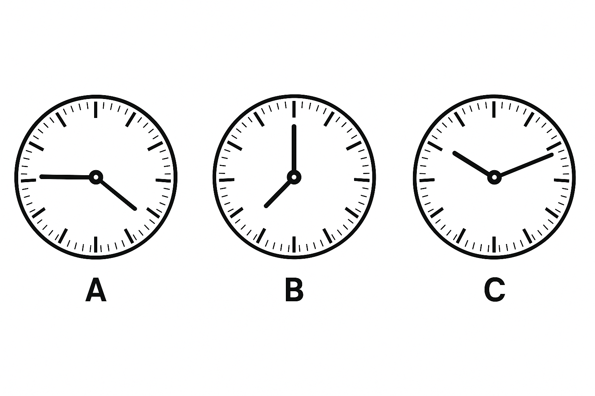

Foundation
12 web questions
- What is 45 minutes after 10:15 am?
- Change 5:00 pm into 24-hour time.
- A bus leaves at 07:35 and arrives at 10:05. Calculate duration.
- A movie is 135 minutes long. Write in hours and minutes.
- What is 30 minutes before 9:00 am?
- How many minutes in 2 hours?
- Fill: 1 hour = minutes.
- Convert 2h30m into minutes.
- Add: 1h15m + 0h50m.
- Subtract: 2h - 45m.
- A train leaves at 13:20 and journey is 2h40m. When does it arrive?
- Explain AM vs PM in one short sentence.
Proficient
6 web questions

- Read clock A. Write the time in words and in digital 24-hour format.
- Read clock B. What is the time 35 minutes later? Write your answer in analogue terms and digital format.
- Read clock C. A train departs at the time shown and takes 2 hours 15 minutes. What time does it arrive?
- Read clock G and clock H. What is the time difference between G and H in hours and minutes?
- If an event starts at clock G's time and runs for the difference you calculated in Q4, what time will it finish (24-hour)?
- The digital panel shows 11:20. Convert that to analogue, and explain whether it matches clock H.
Excellence
12 web questions
- A bus leaves 07:35 arrives 10:05. Calculate duration.
- Change 5:00 pm into 24-hour time and explain.
- A movie is 135 minutes. Write in hours and minutes and in decimal hours.
- A race is completed in 3 1/4 hours and another in 2h15m. Find difference in seconds.
- Convert 2.75 hours to hours and minutes.
- If a flight is 10h 50m from 23:20, what is local arrival time next day?
- A timetable shows departures every 15 minutes starting 08:00. List next 6 departures.
- Explain converting between mixed hours and minutes and decimal hours.
- A meeting lasts 2h40m. If it starts at 14:25, when does it finish?
- A store opens 09:00 closes 17:30. How many minutes open per week (5 days)?
- Create a contextual time problem involving hours/minutes and give solution.
- Explain AM/PM edge cases in one short sentence.